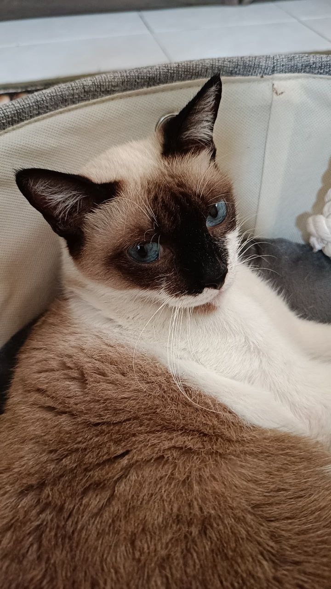

Ciki
- Name(s): Ciki, Engine
- Relation: THE mother of Cika, Cepot
- Fav toys: None because she is an oldie
- Characteristics: Cute but can be dangerous
- Advantage: Very cute, cuddly :]
- Huggable: 10/10
Cika

- Name(s): Cika, Cikachu
- Relation: The daughter of Ciki
- Fav toys: Stockings, tissues, paper towel
- Characteristics: Mischieve, VERY naughty
- Advantage: CUTEEEEE
she can get away with anything - Huggable: 11/10
Cepot
- Name(s): Cepot, Nanepot
- Relation: The daughter of Ciki
- Fav toys: Frank,
people's feet - Characteristics: One moment she's smiling, one moment she bites
- Advantages: CUTE, clingy but will scratch you in the process
- Notes: She have disabilities
- Huggable: 3/10
Semeh
- Name(s): Semeh, Grumpy
- Relation: ...Honestly can't remember
- Fav toys:
people's hands - Characteristics: Tsundere..
- Advantages: Can be clingy overtime, needs time to warm up
- Huggable: 6/10
Lily
- Name(s): Lily, Lily but in baby voice
- Relation: Daughter of Cika
- Fav toys: Sofa, Earbuds
- Characteristics: Attention seeker
- Note: She have 4 siblings but all of them went missing
- Huggable: 9/10
- Reason: She stinks
Some moments of them :)
To conclude, I have 5 cats total right now. They are so cute :D